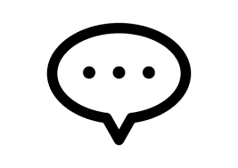

ココロノータ
⚙
今日の日記
投稿
投稿された日記
他の人の日記
×
リプライを作成
リプライする日記：
分類を選択:
すごい
うれしい
ほっこり
感動
面白い
独創的
かわいい
風景描写
共感
見た目
流行
オノマトペ
シャッフル
選んだ褒め言葉:
リプライ送信
設定
プロフィール
あなたのニックネームやアイコンを設定できます。
アイコン:
ニックネーム:
保存
データの削除
保存されたデータをリセットします。
すべての投稿とリプライを削除
日記投稿

日記一覧